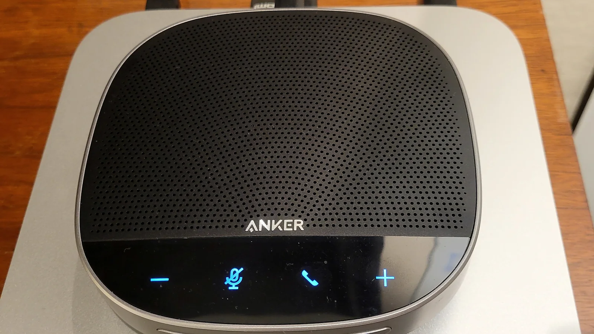

Speakerphone Buying Checklist
Speakerphone Buying Checklist matters because a USB conference speakerphone has to fit the meeting room, laptop, phone, meeting software, office noise, desk movement, and call routine rather than simply look premium in a product photo.
For speakerphone buying checklist, test the speakerphone with the actual laptop, phone, meeting app, glasses if worn, noisy typing, nearby voices, walking range, and a normal long-call schedule.
The buying process should stay practical. A speakerphone can have strong echo control but fail if the microphone sounds compressed, the mute control is confusing, the ear pads get hot, or USB reconnects slowly between meetings.
Good comparison notes include speakerphone weight, pickup radius, speaker grille design, speaker placement, microphone noise-cancelling, duplex audio, echo control, echo control, USB power reliability, USB cable or power option, USB dongle, device switching, warranty, and return policy.
For product-level comparison, the related LeStallion guide to USB conference speakerphone options for meeting-room calls is the next step after this speakerphone buying checklist planning note.
Operating checkpoint 1: review speakerphone buying checklist against long-call comfort, room layout, microphone clarity, keyboard noise, nearby voices, mute confidence, USB power reliability, charging habits, USB reconnect speed, multipoint handoff, platform compatibility, carry case or cable, and return terms. Record the practical result so the final USB conference speakerphone choice is based on daily call behavior instead of product photos.
Operating checkpoint 2: review speakerphone buying checklist against long-call comfort, room layout, microphone clarity, keyboard noise, nearby voices, mute confidence, USB power reliability, charging habits, USB reconnect speed, multipoint handoff, platform compatibility, carry case or cable, and return terms. Record the practical result so the final USB conference speakerphone choice is based on daily call behavior instead of product photos.
Operating checkpoint 3: review speakerphone buying checklist against long-call comfort, room layout, microphone clarity, keyboard noise, nearby voices, mute confidence, USB power reliability, charging habits, USB reconnect speed, multipoint handoff, platform compatibility, carry case or cable, and return terms. Record the practical result so the final USB conference speakerphone choice is based on daily call behavior instead of product photos.
Operating checkpoint 4: review speakerphone buying checklist against long-call comfort, room layout, microphone clarity, keyboard noise, nearby voices, mute confidence, USB power reliability, charging habits, USB reconnect speed, multipoint handoff, platform compatibility, carry case or cable, and return terms. Record the practical result so the final USB conference speakerphone choice is based on daily call behavior instead of product photos.
Operating checkpoint 5: review speakerphone buying checklist against long-call comfort, room layout, microphone clarity, keyboard noise, nearby voices, mute confidence, USB power reliability, charging habits, USB reconnect speed, multipoint handoff, platform compatibility, carry case or cable, and return terms. Record the practical result so the final USB conference speakerphone choice is based on daily call behavior instead of product photos.
Operating checkpoint 6: review speakerphone buying checklist against long-call comfort, room layout, microphone clarity, keyboard noise, nearby voices, mute confidence, USB power reliability, charging habits, USB reconnect speed, multipoint handoff, platform compatibility, carry case or cable, and return terms. Record the practical result so the final USB conference speakerphone choice is based on daily call behavior instead of product photos.
Operating checkpoint 7: review speakerphone buying checklist against long-call comfort, room layout, microphone clarity, keyboard noise, nearby voices, mute confidence, USB power reliability, charging habits, USB reconnect speed, multipoint handoff, platform compatibility, carry case or cable, and return terms. Record the practical result so the final USB conference speakerphone choice is based on daily call behavior instead of product photos.
Operating checkpoint 8: review speakerphone buying checklist against long-call comfort, room layout, microphone clarity, keyboard noise, nearby voices, mute confidence, USB power reliability, charging habits, USB reconnect speed, multipoint handoff, platform compatibility, carry case or cable, and return terms. Record the practical result so the final USB conference speakerphone choice is based on daily call behavior instead of product photos.
Operating checkpoint 9: review speakerphone buying checklist against long-call comfort, room layout, microphone clarity, keyboard noise, nearby voices, mute confidence, USB power reliability, charging habits, USB reconnect speed, multipoint handoff, platform compatibility, carry case or cable, and return terms. Record the practical result so the final USB conference speakerphone choice is based on daily call behavior instead of product photos.
Operating checkpoint 10: review speakerphone buying checklist against long-call comfort, room layout, microphone clarity, keyboard noise, nearby voices, mute confidence, USB power reliability, charging habits, USB reconnect speed, multipoint handoff, platform compatibility, carry case or cable, and return terms. Record the practical result so the final USB conference speakerphone choice is based on daily call behavior instead of product photos.
Operating checkpoint 11: review speakerphone buying checklist against long-call comfort, room layout, microphone clarity, keyboard noise, nearby voices, mute confidence, USB power reliability, charging habits, USB reconnect speed, multipoint handoff, platform compatibility, carry case or cable, and return terms. Record the practical result so the final USB conference speakerphone choice is based on daily call behavior instead of product photos.
Operating checkpoint 12: review speakerphone buying checklist against long-call comfort, room layout, microphone clarity, keyboard noise, nearby voices, mute confidence, USB power reliability, charging habits, USB reconnect speed, multipoint handoff, platform compatibility, carry case or cable, and return terms. Record the practical result so the final USB conference speakerphone choice is based on daily call behavior instead of product photos.
Operating checkpoint 13: review speakerphone buying checklist against long-call comfort, room layout, microphone clarity, keyboard noise, nearby voices, mute confidence, USB power reliability, charging habits, USB reconnect speed, multipoint handoff, platform compatibility, carry case or cable, and return terms. Record the practical result so the final USB conference speakerphone choice is based on daily call behavior instead of product photos.
Operating checkpoint 14: review speakerphone buying checklist against long-call comfort, room layout, microphone clarity, keyboard noise, nearby voices, mute confidence, USB power reliability, charging habits, USB reconnect speed, multipoint handoff, platform compatibility, carry case or cable, and return terms. Record the practical result so the final USB conference speakerphone choice is based on daily call behavior instead of product photos.
Operating checkpoint 15: review speakerphone buying checklist against long-call comfort, room layout, microphone clarity, keyboard noise, nearby voices, mute confidence, USB power reliability, charging habits, USB reconnect speed, multipoint handoff, platform compatibility, carry case or cable, and return terms. Record the practical result so the final USB conference speakerphone choice is based on daily call behavior instead of product photos.
Operating checkpoint 16: review speakerphone buying checklist against long-call comfort, room layout, microphone clarity, keyboard noise, nearby voices, mute confidence, USB power reliability, charging habits, USB reconnect speed, multipoint handoff, platform compatibility, carry case or cable, and return terms. Record the practical result so the final USB conference speakerphone choice is based on daily call behavior instead of product photos.
Operating checkpoint 17: review speakerphone buying checklist against long-call comfort, room layout, microphone clarity, keyboard noise, nearby voices, mute confidence, USB power reliability, charging habits, USB reconnect speed, multipoint handoff, platform compatibility, carry case or cable, and return terms. Record the practical result so the final USB conference speakerphone choice is based on daily call behavior instead of product photos.
Operating checkpoint 18: review speakerphone buying checklist against long-call comfort, room layout, microphone clarity, keyboard noise, nearby voices, mute confidence, USB power reliability, charging habits, USB reconnect speed, multipoint handoff, platform compatibility, carry case or cable, and return terms. Record the practical result so the final USB conference speakerphone choice is based on daily call behavior instead of product photos.
Operating checkpoint 19: review speakerphone buying checklist against long-call comfort, room layout, microphone clarity, keyboard noise, nearby voices, mute confidence, USB power reliability, charging habits, USB reconnect speed, multipoint handoff, platform compatibility, carry case or cable, and return terms. Record the practical result so the final USB conference speakerphone choice is based on daily call behavior instead of product photos.
Operating checkpoint 20: review speakerphone buying checklist against long-call comfort, room layout, microphone clarity, keyboard noise, nearby voices, mute confidence, USB power reliability, charging habits, USB reconnect speed, multipoint handoff, platform compatibility, carry case or cable, and return terms. Record the practical result so the final USB conference speakerphone choice is based on daily call behavior instead of product photos.
Operating checkpoint 21: review speakerphone buying checklist against long-call comfort, room layout, microphone clarity, keyboard noise, nearby voices, mute confidence, USB power reliability, charging habits, USB reconnect speed, multipoint handoff, platform compatibility, carry case or cable, and return terms. Record the practical result so the final USB conference speakerphone choice is based on daily call behavior instead of product photos.
Operating checkpoint 22: review speakerphone buying checklist against long-call comfort, room layout, microphone clarity, keyboard noise, nearby voices, mute confidence, USB power reliability, charging habits, USB reconnect speed, multipoint handoff, platform compatibility, carry case or cable, and return terms. Record the practical result so the final USB conference speakerphone choice is based on daily call behavior instead of product photos.
Operating checkpoint 23: review speakerphone buying checklist against long-call comfort, room layout, microphone clarity, keyboard noise, nearby voices, mute confidence, USB power reliability, charging habits, USB reconnect speed, multipoint handoff, platform compatibility, carry case or cable, and return terms. Record the practical result so the final USB conference speakerphone choice is based on daily call behavior instead of product photos.
Operating checkpoint 24: review speakerphone buying checklist against long-call comfort, room layout, microphone clarity, keyboard noise, nearby voices, mute confidence, USB power reliability, charging habits, USB reconnect speed, multipoint handoff, platform compatibility, carry case or cable, and return terms. Record the practical result so the final USB conference speakerphone choice is based on daily call behavior instead of product photos.
Operating checkpoint 25: review speakerphone buying checklist against long-call comfort, room layout, microphone clarity, keyboard noise, nearby voices, mute confidence, USB power reliability, charging habits, USB reconnect speed, multipoint handoff, platform compatibility, carry case or cable, and return terms. Record the practical result so the final USB conference speakerphone choice is based on daily call behavior instead of product photos.
Operating checkpoint 26: review speakerphone buying checklist against long-call comfort, room layout, microphone clarity, keyboard noise, nearby voices, mute confidence, USB power reliability, charging habits, USB reconnect speed, multipoint handoff, platform compatibility, carry case or cable, and return terms. Record the practical result so the final USB conference speakerphone choice is based on daily call behavior instead of product photos.
Operating checkpoint 27: review speakerphone buying checklist against long-call comfort, room layout, microphone clarity, keyboard noise, nearby voices, mute confidence, USB power reliability, charging habits, USB reconnect speed, multipoint handoff, platform compatibility, carry case or cable, and return terms. Record the practical result so the final USB conference speakerphone choice is based on daily call behavior instead of product photos.
Operating checkpoint 28: review speakerphone buying checklist against long-call comfort, room layout, microphone clarity, keyboard noise, nearby voices, mute confidence, USB power reliability, charging habits, USB reconnect speed, multipoint handoff, platform compatibility, carry case or cable, and return terms. Record the practical result so the final USB conference speakerphone choice is based on daily call behavior instead of product photos.
Operating checkpoint 29: review speakerphone buying checklist against long-call comfort, room layout, microphone clarity, keyboard noise, nearby voices, mute confidence, USB power reliability, charging habits, USB reconnect speed, multipoint handoff, platform compatibility, carry case or cable, and return terms. Record the practical result so the final USB conference speakerphone choice is based on daily call behavior instead of product photos.
Operating checkpoint 30: review speakerphone buying checklist against long-call comfort, room layout, microphone clarity, keyboard noise, nearby voices, mute confidence, USB power reliability, charging habits, USB reconnect speed, multipoint handoff, platform compatibility, carry case or cable, and return terms. Record the practical result so the final USB conference speakerphone choice is based on daily call behavior instead of product photos.
Operating checkpoint 31: review speakerphone buying checklist against long-call comfort, room layout, microphone clarity, keyboard noise, nearby voices, mute confidence, USB power reliability, charging habits, USB reconnect speed, multipoint handoff, platform compatibility, carry case or cable, and return terms. Record the practical result so the final USB conference speakerphone choice is based on daily call behavior instead of product photos.
Operating checkpoint 32: review speakerphone buying checklist against long-call comfort, room layout, microphone clarity, keyboard noise, nearby voices, mute confidence, USB power reliability, charging habits, USB reconnect speed, multipoint handoff, platform compatibility, carry case or cable, and return terms. Record the practical result so the final USB conference speakerphone choice is based on daily call behavior instead of product photos.
Operating checkpoint 33: review speakerphone buying checklist against long-call comfort, room layout, microphone clarity, keyboard noise, nearby voices, mute confidence, USB power reliability, charging habits, USB reconnect speed, multipoint handoff, platform compatibility, carry case or cable, and return terms. Record the practical result so the final USB conference speakerphone choice is based on daily call behavior instead of product photos.
Use this support note alongside the main USB conference speakerphone guide and the LeStallion shortlist for USB conference speakerphones for teams of 10-15 people. Keep the decision tied to repeatable call behavior, not just a premium-looking speakerphone.